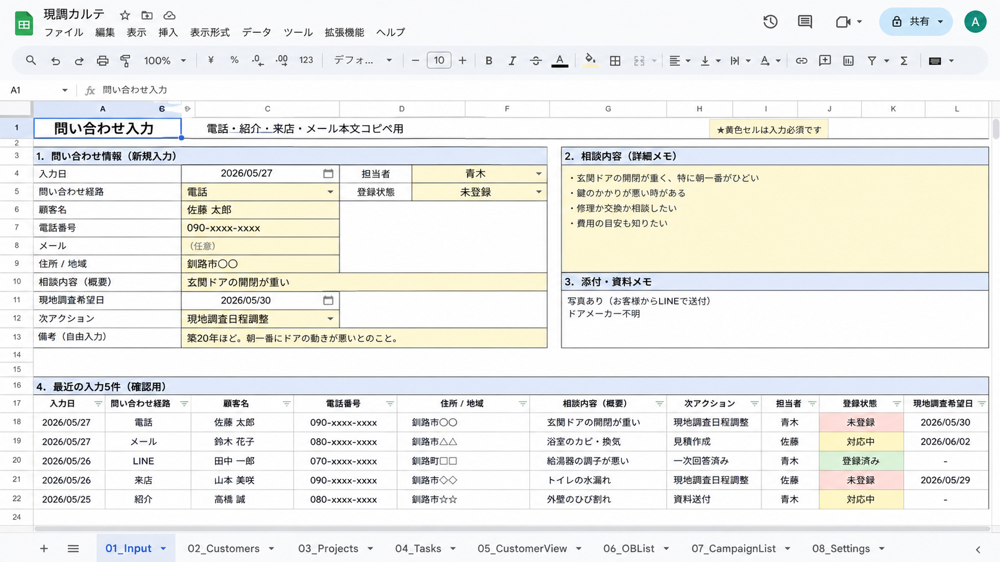
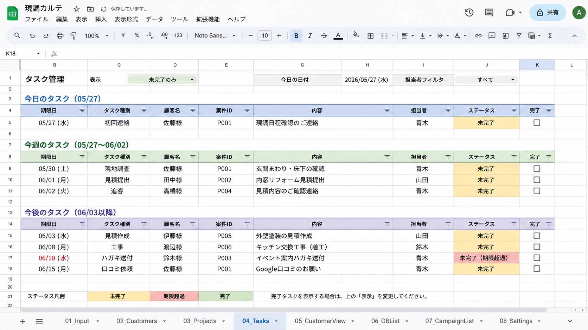
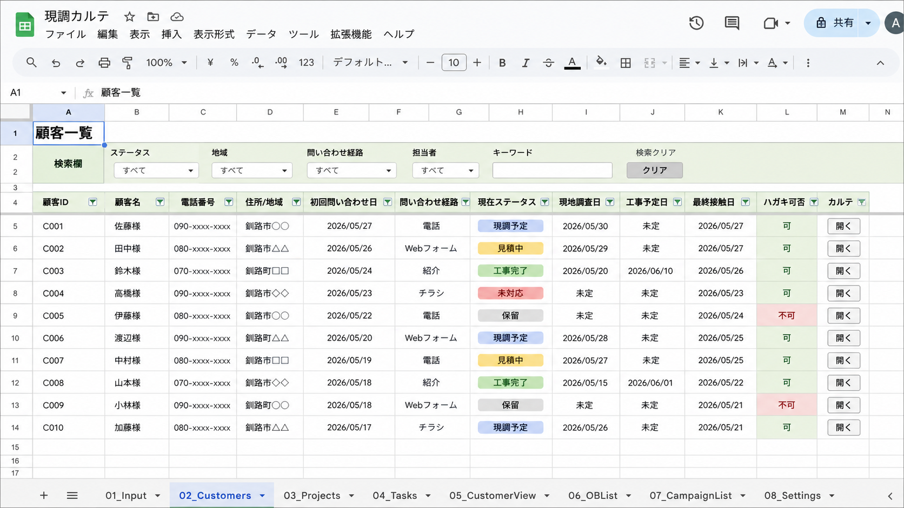
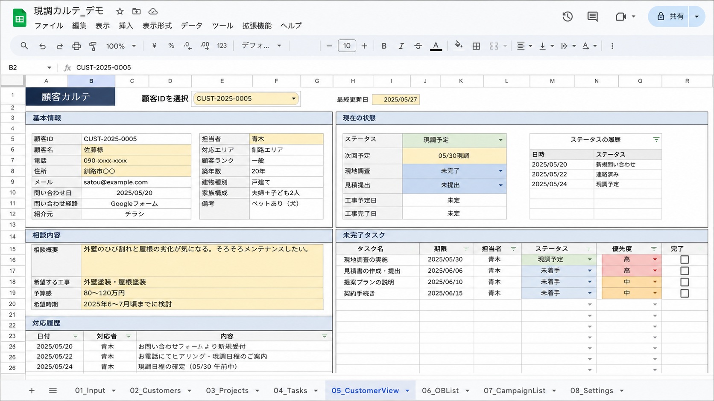

その問い合わせ、
次に誰が追いますか？
フォーム、LINE、メモ、Excelに散らばる反響を、現調予定・見積状況・次回アクションまで1枚で追える形に。反響・現調管理シート「うけメモ」です。
LINE追加後に「シート希望」と送ると、配布案内を受け取れます。

反響は来ているのに、対応状況が見えない。
「あの件、誰か折り返した？」「現調日、LINEのどこにあったっけ？」小規模な会社ほど、問い合わせ後の情報が担当者ごとに分かれがちです。
問い合わせ内容を、別の表やメモに手入力している。
現調予定や変更連絡が、担当者のLINEに残りやすい。
次の連絡が、担当者の記憶や個人判断に寄っている。
本格システムほどではないが、今のExcel管理には限界がある。
1枚で見えると、次の一手が止まりにくい。
反響日、相談内容、現調予定、ステータス、担当者、次回アクションを同じ場所へ。まずは管理の型を小さく作ります。
問い合わせ後の「次にやること」が、1枚で見える「うけメモ」です。
この画面を見ながら、「うちは工事種別を増やしたい」「担当者別に見たい」「フォーム項目を合わせたい」を確認してください。

次回アクション期限日、担当者、完了状態を一覧で確認。

顧客一覧顧客情報と案件の状態をまとめて確認。

顧客詳細1件ごとの相談履歴や次にやることを確認。
うけメモは、問い合わせ後の情報を受け止めるためのシートです。
まずは、フォーム・LINE・電話・紹介で来た内容をひとつに残すこと。誰が見ても、次に何をするか分かる状態を作ります。
問い合わせを受ける
フォーム・電話・LINE・紹介など、入口が分かれていても同じ場所に残します。
次にやることを残す
現調予定、見積、折り返し、確認待ちなど、対応状況を見える形にします。
顧客リストになる
相談内容や対応履歴が残るので、あとから顧客情報として見返せます。
コピーして使える「うけメモ」を、今の管理表と見比べてください。
LINE追加後に「シート希望」と送ると、コピーURL、使い方ガイド、確認ポイントの配布案内を受け取れます。まずは今の管理表と見比べてください。
Web制作会社・広告代理店の方へ。反響後の“受け皿”まで提案できます。
LPや広告で問い合わせを増やしても、クライアント側の管理が紙・Excel・LINEのままだと対応状況が見えません。制作後の追加提案として、管理シート化を組み込めます。
問い合わせ後の管理まで提案できます。
流入後の対応状況を見える形にします。
工事種別や運用に合わせて整えます。
小さく始めるために、範囲を分けています。
まずは反響・現調まわりから。kintoneや専用システムを入れる前に、管理の型をスプレッドシートで試作・整理できます。
問い合わせ管理、現調予定、次回アクション、Googleフォーム接続、既存シート改善。
LINE/メール自動連携、外部サービス連携、大量データ処理、複雑な権限管理。
大きなシステムの前に、まず反響管理の型を固めたい小規模会社。
現場に、少し余白を。
Blue Lifeは、建設・住宅業の問い合わせ対応や顧客管理を、Googleスプレッドシート/GASで整える制作サービスです。小さく作り、使いながら直し、現場の運用に乗る形を一緒に探します。
まずは「うけメモ」を、自社の管理表と見比べてください。
LINE追加後に「シート希望」と送ってください。今の管理表と見比べて、使えそうか確認できます。